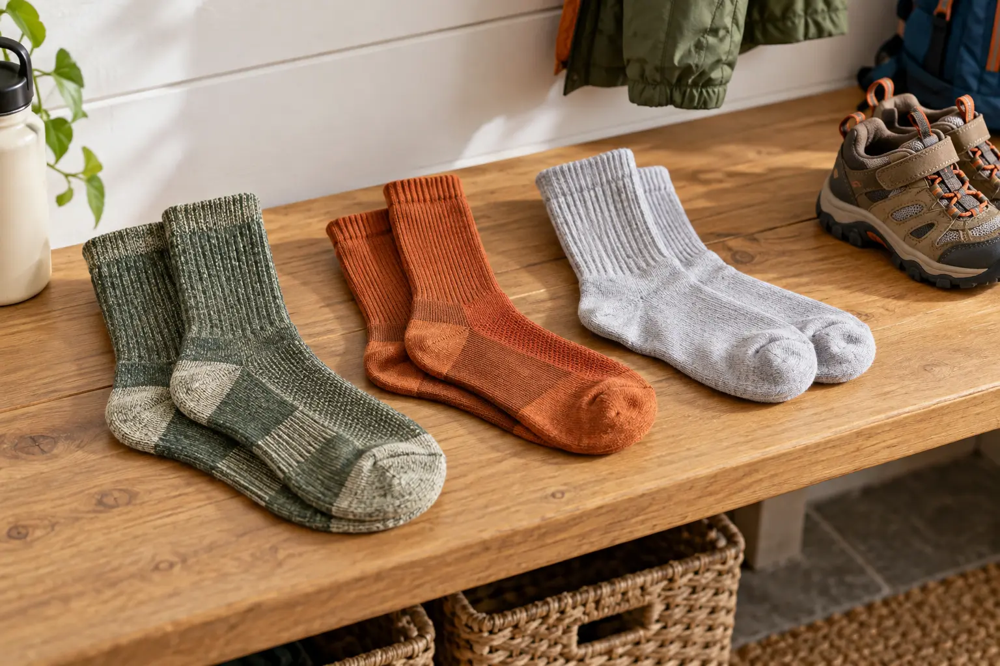

Kids’ Hiking Socks: Wool Blend vs Synthetic vs Cotton—and the Shoe-Fit Check
The best sock is the one that fits the child, the shoe and the weather at the same time. Buy one pair first, test it in the actual footwear and stop treating thickness as automatic comfort.

Representative unbranded wool-blend, synthetic and cotton-style sock categories. Original AI-assisted editorial photograph; materials are illustrative and no product, fiber content or performance was tested.
The blunt version: choose the shoe first, then the sock thickness that fits inside it without pressure or sliding. Wool blends and synthetics are usually better trail candidates because authoritative hiking guidance favors moisture-wicking materials; cotton is better kept for low-sweat everyday use than for a wet or long hike.
The decision is not “warm or thin”
A sock changes the fit of the whole footwear system. A thick cushioned pair can make a properly fitted shoe too tight. A thin pair can let a heel move in a roomy boot. Seams, wrinkles, toe length, cuff pressure and the child's willingness to keep the sock on matter as much as the fiber label.
The National Park Service recommends thick wool or synthetic moisture-wicking socks for longer hikes and an extra pair. The American Academy of Dermatology recommends nylon or moisture-wicking socks to help prevent foot blisters and says shoes should be neither too tight nor too loose. Those are general principles, not proof that one branded sock will work for every child.
Choose by route, shoe and laundry reality
Fiber names are only the start. Read the actual blend, construction and care label.
Wool blend
Best fit: cool weather, repeated wear between washes, or a child who needs insulation across changing conditions.
Tradeoff: price, texture sensitivity, care requirements and variable wool percentage. “Merino” does not guarantee itch-free fit or durability.
Synthetic
Best fit: warm or wet outings, quick washing and drying, or a child who rejects wool texture.
Tradeoff: odor retention, heat feel and very different durability among blends and knits.
Cotton
Best fit: ordinary low-sweat wear where getting wet is unlikely and easy washing matters more than trail performance.
Tradeoff: cotton holds moisture against the foot. It is the wrong default for long, wet, cold or blister-prone hiking.
The rule: a technically good sock that compresses toes, wrinkles under the arch or makes the shoe tight is the wrong sock for that child.
The six-part shoe-fit check
Use the real shoe: test the sock in the trail runner, hiking shoe or boot the child will actually wear—not barefoot on the living-room floor.
Check the toes: the sock should reach the toes without pulling them inward, bunching at the ends or folding under the little toe.
Check the heel: place the sock heel where the child's heel sits. A heel pocket halfway up the ankle or under the arch signals the wrong size or shape.
Check shoe volume: lace the shoe normally. Ask about pressure across the toes and top of the foot. Look for toes forced together or a child loosening the shoe for relief.
Walk stairs and a slope: use 10 to 15 minutes at home or on a familiar block. Watch for heel lift, sliding, wrinkles, cuff complaints and hot spots.
Inspect immediately: remove the shoe and sock. Redness, pain, damp folds or a line from a tight cuff is information. Fix the system before a longer hike.
Pair this check with the kids’ hiking-footwear guide. Do not solve a wrong shoe size by buying a thicker sock, and do not solve a too-tight boot by hunting for the thinnest possible sock.
Cushion, height and seams
Cushion: more pile can reduce the usable room in a shoe. Start with light or medium cushion unless the footwear was fitted around something thicker. Height: the cuff should rise above every part of the shoe collar that rubs. A no-show sock inside a higher boot can move the friction problem to bare skin. Seams: inspect the toe area with a hand. “Seamless” is a construction claim, not a promise that a texture-sensitive child will ignore it.
Compression is not automatically support. A child sock should stay up without leaving a painful band or making the child pull at it. Kids with circulation, sensation, skin or foot conditions need individualized advice from a qualified clinician rather than a generic gear rule.
The one-pair-first buying protocol
Measure both feet and use the manufacturer's current size chart; do not buy by age alone.
Buy one pair in the intended thickness, not a multi-pack built around hope.
Wash it exactly as directed. Some socks change feel or size after laundering.
Run the full shoe-fit check after washing.
Use it on one short, familiar walk with a dry spare pair in the adult's pack.
Only buy more after the child finishes without pressure, sliding, skin redness or a laundry problem the family will avoid.
This is also why used or hand-me-down socks deserve scrutiny. Stretched cuffs, thin heel fabric, hardened fibers and a distorted toe box can change the fit even when the printed size seems right.
Warm weather, cold weather and wet feet
Warm weather: favor a light construction that fits the shoe and dries reasonably, then manage sweat with breaks and a spare pair. Cool weather: choose insulation without compressing the foot. A tighter shoe can reduce comfort even when the sock itself is warm. Wet conditions: no sock makes a non-waterproof shoe waterproof, and a waterproof shoe can still fill from above or trap sweat. Carry a dry change and shorten the route when feet stay wet.
The CDC warns that prolonged wet feet can cause immersion-foot injury. A family day hike is not an expedition, but the practical lesson is simple: clean, dry socks and an exit plan matter more than fiber marketing. Use the family rain-gear system for the rest of the clothing decision.
Hot spots and blisters
Teach children to report rubbing, burning, pain or a “weird spot” immediately. The American Academy of Dermatology advises stopping activity when pain, discomfort or redness appears. Do not reward silence. Stop, remove the shoe, smooth or replace the sock and use an appropriate protective barrier if the responsible adult knows how.
Do not pop a routine blister on the trail because it is inconvenient. Follow qualified medical guidance, keep the area clean and covered, and seek care for signs of infection, serious pain, a significant wound or a child with a condition that changes foot risk. This guide is a buying and fit framework, not medical treatment.
What not to buy
A value pack before one pair has passed the shoe-fit and wash test.
An adult sock folded or bunched to fit a child.
A thick “winter” sock for a shoe with no spare volume.
A sock whose fiber, size range or care instructions are not disclosed.
A novelty design with bulky interior threads where the child's toes rub.
A waterproof-sock claim as a substitute for route, footwear and wet-foot management.
Pack the spare where it can work
Put one dry pair in a small labeled bag inside the adult's hiking daypack. A spare buried under lunch and rain layers is not a quick fix. On return, wash and dry socks according to the label, inspect high-wear areas and replace pairs that no longer hold shape or protect the foot.
For the rest of a first outing, use the first-hike plan: short route, early turnaround and success defined by finishing well—not mileage.